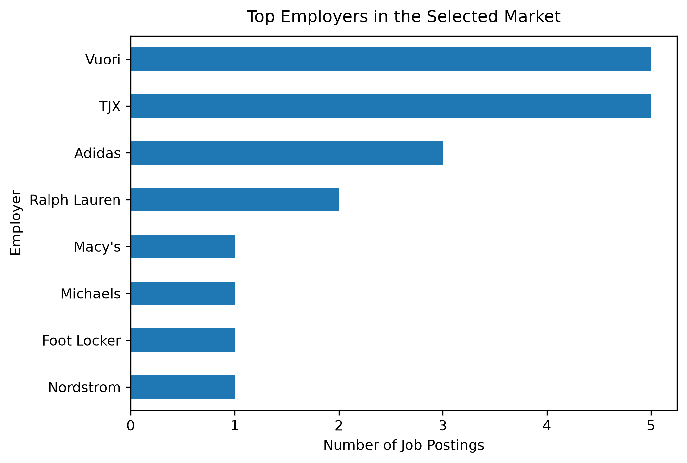
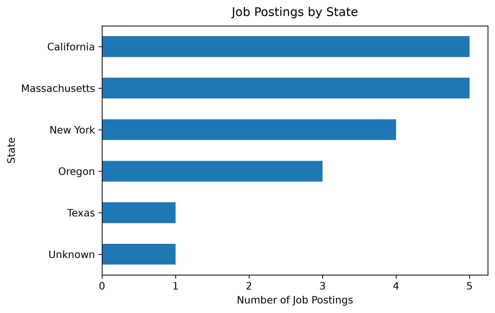

Projects
Selected projects from my graduate coursework and analytics work. These projects demonstrate how I use data, analytical methods, and visualization to explore business questions and communicate actionable insights.
Fashion & Apparel Job Market Analysis
Exploring analytics opportunities in fashion and apparel
Analyzed a targeted sample of analytics-related job postings from fashion and apparel employers to examine hiring patterns, salary information, geographic concentration, work arrangements, and experience requirements.
Tools: Python · Pandas · Plotly · PySpark · Quarto · GitHub


Analysis included:
- Employer representation
- Salary ranges
- Geographic distribution
- Remote and hybrid work arrangements
- Experience requirements
The analysis highlighted how opportunities in the selected sample were distributed across employers and locations while also revealing limitations in salary, experience, and work-arrangement reporting. The project demonstrates an end-to-end workflow from data preparation and exploratory analysis to interactive visualization and business interpretation.
Corporate 10-K Analysis Using NLP
Comparing Merck and Johnson & Johnson corporate disclosures
Analyzed Merck and Johnson & Johnson 10-K filings from 2020–2024 using multiple natural language processing approaches to compare corporate disclosures, measure document similarity, and evaluate different text representations.
Tools: Python · TF-IDF · Word2Vec · GloVe · FAISS · Machine Learning · RAG
Analysis included:
- Text preprocessing and feature engineering
- TF-IDF and document similarity
- Word2Vec and GloVe embeddings
- Machine learning classification
- FAISS vector similarity search
- Retrieval-augmented generation (RAG)
The analysis compared traditional and embedding-based representations, with TF-IDF providing the strongest classification performance among the evaluated approaches. The project also extended the analysis through FAISS-based retrieval and RAG to explore grounded information retrieval from financial disclosures.
Customer Segmentation & Business Analysis
Identifying customer value, behavior, and retention opportunities
Analyzed Northwind customer and transaction data to understand purchasing behavior, customer value, and differences across customer segments, with the goal of translating behavioral patterns into actionable business insights.
Tools: Python · Pandas · Customer Segmentation · Statistical Analysis · Data Visualization
Analysis included:
- Customer purchasing behavior
- Revenue and customer value analysis
- Customer segmentation
- At-risk customer identification
- Relationship between customer metrics
- Business recommendations
The analysis identified distinct customer groups and highlighted customers showing potential retention risk. It also examined relationships between customer behavior and business value to support more targeted customer strategies and data-informed decision-making.
Business Intelligence & Data Visualization
Turning business data into clear visual insights
Developed dashboards and visual analyses designed to communicate complex information clearly and support business decision-making.
Tools: Tableau · Power BI · Excel · Python · Plotly
Key areas:
- Dashboard development
- Business performance analysis
- Trend identification
- Interactive visualization
- Data storytelling
The focus is not only on performing analysis, but also on communicating findings in a form that business stakeholders can quickly understand and use.
More Work
Additional academic and analytics projects will be added as I continue expanding my portfolio.